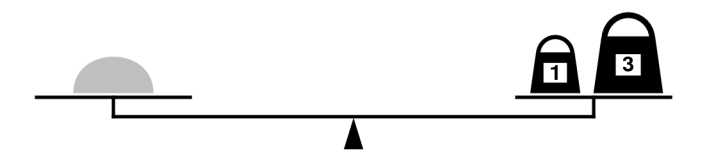
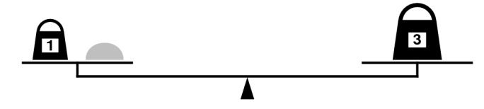

This week’s section exercises continue our exploration of recursion to tackle even more challenging and interesting problems. In particular, many of this week's section problems center around recursive backtracking, a very powerful and versatile problem solving technique.
Remember that every week we will also be releasing a Qt Creator project containing starter code and testing infrastructure for that week's section problems. When a problem name is followed by the name of a .cpp file, that means you can practice writing the code for that problem in the named file of the Qt Creator project. Here is the zip of the section starter code:
1) Win some, lose sum (sum.cpp)
Topics: recursive backtracking
Write a recursive function named canMakeSum that takes a reference to a Vector<int> and an int target value and returns true if it is possible to have some selection of values from the Vector that sum to the target value. In particular, you should be implementing a function with the following declaration
bool canMakeSum(Vector<int>& values, int target)
For example, let's say that we executed the following code
Vector<int> nums = {1,1,2,3,5};
canMakeSum(nums, 9)
We should expect that the call to canMakeSum should return true. Given the values specified in nums, we can select 1, 3, and 5 such that 5 + 3 + 1 = 9.
However, let's say that we executed the following code instead
Vector<int> nums = {1,4,5,6};
canMakeSum(nums, 8);
We should expect that the call to canMakeSum in this case should return false, since there is no possible combination of values from the vector that sum up to the target value of 8.
SOLUTION 1
bool canMakeSumHelper(Vector<int>& v, int target, int sumSoFar) {
if (v.isEmpty()) {
return sumSoFar == target;
}
/* Here we choose the last element in the vector.
* We could have chosen any element, but the last
* is the easiest and fastest method.
*/
int choice = v[v.size() - 1];
v.remove(v.size() - 1);
bool with = canMakeSumHelper(v, target, sumSoFar + choice);
bool without = canMakeSumHelper(v, target, sumSoFar);
// And then we unchoose, by adding this back!
v.add(choice);
return with || without;
}
bool canMakeSum(Vector<int>& v, int target) {
return canMakeSumHelper(v, target, 0);
}
SOLUTION 2
/*
* This solution is similar to the one above, except it uses
* an additional index parameter in a vector to make the choices,
* instead of removing from the vector like solution 1 did.
*/
bool canMakeSumHelper(Vector<int>& v, int target, int sumSoFar, int index) {
if (index >= v.size()) {
return sumSoFar == target;
}
// This is our choice now. Remember we can choose any element
// in the vector, so we choose the element at 'index'
int choice = v[index];
bool with = canMakeSumHelper(v, target, sumSoFar + choice, index + 1);
bool without = canMakeSumHelper(v, target, sumSoFar, index + 1);
// We don't have to add back, because we never removed!
return with || without;
}
bool canMakeSum(Vector<int>& v, int target) {
return canMakeSumHelper(v, target, 0, 0);
}
2) Change We Can Believe In (change.cpp)
Topic: Recursive Backtracking
In the US, as is the case in most countries, the best way to give change for any total is to use a greedy strategy – find the highest-denomination coin that’s less than the total amount, give one of those coins, and repeat. For example, to pay someone 97¢ in the US in cash, the best strategy would be to
- give a half dollar (50¢ given, 47¢ remain), then
- give a quarter (75¢ given, 22¢ remain), then
- give a dime (85¢ given, 12¢ remain), then
- give a dime (95¢ given, 2¢ remain), then
- give a penny (96¢ given, 1¢ remain), then
- give another penny (97¢ given, 0¢ remain).
This uses six total coins, and there’s no way to use fewer coins to achieve the same total.
However, it’s possible to come up with coin systems where this greedy strategy doesn’t always use the fewest number of coins. For example, in the tiny country of Recursia, the residents have decided to use the denominations 1¢, 12¢, 14¢, and 63¢, for some strange reason. So suppose you need to give back 24¢ in change. The best way to do this would be to give back two 12¢ coins. However, with the greedy strategy of always picking the highest-denomination coin that’s less than the total, you’d pick a 14¢ coin and ten 1¢ coins for a total of eleven coins. That’s pretty bad!
Your task is to write a function
int fewestCoinsFor(int cents, Set<int>& coins)
that takes as input a number of cents and a Set
You can assume that the set of coins always contains a 1¢ coin, so you never need to worry about the case where it’s simply not possible to make change for some total. You can also assume that there are no coins worth exactly 0¢ or a negative number of cents. Finally, you can assume that the number of cents to make change for is nonnegative.
Makes cents? I certainly hope so.
The idea behind both solutions is the following: if we need to make change for zero cents, the only (and, therefore, best!) option is to use 0 coins. Otherwise, we need to give back at least one coin. What’s the first coin we should hand back? We don’t know which one it is, but we can say that it’s got to be one of the coins from our options and that that coin can’t be worth more than the total. So we’ll try each of those options in turn, see which one ends up requiring the fewest coins for the remainder, then go with that choice. The code for this is really elegant and is shown here:
SOLUTION 1
/**
* Given a collection of denominations and an amount to give in change, returns
* the minimum number of coins required to make change for it.
*
* @param cents How many cents we need to give back.
* @param coins The set of coins we can use.
* @return The minimum number of coins needed to make change.
*/
int fewestCoinsFor(int cents, Set<int>& coins) {
/* Base case: You need no coins to give change for no cents. */
if (cents == 0) {
return 0;
}
/* Recursive case: try each possible coin that doesn’t exceed the
* total as as our first coin.
*/
else {
int bestSoFar = cents + 1; // Can never need this many coins;
/* What is this for loop doing? We use this loop to explore
* all the options of coins we have. To make the change, all of
* the coins in our set are valid options, so we make recursive
* calls, each of which chooses a coin. It is very similar to
* the subset problems we've done in class, where we have two
* choices(either add or don't add to the set). Here, we either
* add coin1 or coin2, ..., coinN.
*/
for (int coin: coins) {
// If this coin doesn’t exceed the total, try using it.
if (coin <= cents) {
/* Use this coin in the change. We add 1 because
we've used one coin
*/
int numCoinsUsed = 1 +
fewestCoinsFor(cents - coin, coins);
/* We want to find the fewest number of coins,
* so compare number of coins used when we use
* the current coin to the minimum number of
* coins so far.
*/
bestSoFar = min(bestSoFar, numCoinsUsed);
}
}
return bestSoFar;
}
}
3) Weights and Balances (weights.cpp)
Topics: recursive backtracking
measured, and priced everything; for whom
what could not be weighed, measured, and
priced had no existence.
—Charles Dickens, Little Dorrit, 1857
In Dickens’s time, merchants measured many commodities using weights and a two-pan balance – a practice that continues in many parts of the world today. If you are using a limited set of weights, however, you can only measure certain quantities accurately.
For example, suppose that you have only two weights: a 1-ounce weight and a 3-ounce weight. With these you can easily measure out 4 ounces, as shown below:

It’s more interesting to discover that you can also measure out 2 ounces by shifting the 1-ounce weight to the other side, as follows below:

Write a recursive function
bool isMeasurable(int target, Vector<int>& weights)
that determines whether it is possible to measure out the desired target amount with a given set of weights, which is stored in the vector weights.
As an example, the function call
Vector<int> weights = {1, 3};
isMeasurable(2, weights);
should return true because it is possible to measure out two ounces using the sample weight set as illustrated in the preceding diagram. On the other hand, calling
Vector<int> weights = {1, 3};
isMeasurable(5, weights);
should return false because it is impossible to use the 1- and 3-ounce weights to add up to 5 ounces. However, the call
Vector<int> weights = {1, 3, 7};
isMeasurable(6, weights);
should return true: you can measure the six-ounce weight by placing it and the one-ounce weight on one side of the scale and by placing the seven-ounce weight on the other.
Here’s a function question to ponder: let’s say that you get to choose n weights. Which ones would you pick to give yourself the best range of weights that you’d be capable of measuring?
Imagine that we start off by putting the amount to be measured (call it n) on the left side of the balance (as shown in the picture on the handout). This makes the target of measurement equal to n. Imagine that there is some way to reach this target n. If we put the weights on the scale one at a time, we can look at where we put that first weight (let’s suppose it weighs w). It must either
- go on the left side, making the target weight on the scale
n + w, - go on the right side, making the target weight on the scale
n - w
We've seen the first two options before, the classic with and without. In this question, there's a third option too:
- not get used at all, leaving the target weight on the scale
n. To see why this is the case, consider a case where you're measuring something weighing 0 ounces. You'd not need any weight to measure 0 ounces so you don't have to put anything on the scale.
If it is indeed truly possible to measure n, then one of these three options has to be the way to do it, even if we don’t know which one it is. The question we then have to ask is whether it’s then possible to measure the new net imbalance using the weights that remain – which we can determine recursively! On the other hand, if it’s not possible to measure n, then no matter which option we choose, we’ll find that there’s no way to use the remaining weights to make everything balanced!
If we’re proceeding recursively, which we are here, we need to think about our base case. There are many options we can choose from. One simple one is the following: imagine that we don’t have any weights at all, that we’re asked to see whether some weight is measurable using no weights. In what circumstances can we do that? Well, if what we’re weighing has a nonzero weight, we can’t possibly measure it – placing it on the scale will tip it to some side, but that doesn’t tell us how much it weighs. On the other hand, if what we’re weighing is completely weightless, then putting it on the scale won’t cause it to tip, convincing us that, indeed, it is weightless! So as our base case, we’ll say that when we’re down to no remaining weights, we can measure n precisely if n = 0. With that in mind, here’s our code:
bool isMeasurable(int target, Vector<int>& weights) {
if (weights.isEmpty()) {
return target == 0; // base case; no weights left to place
} else {
int last = weights[weights.size() - 1]; //using last index is fastest
weights.remove(weights.size() - 1);
// "choose and explore" all of the three possibilities
// This exactly matches the analysis we did above.
bool weightOnLeftSide = isMeasurable(target + last, weights);
bool weightOnRightSide = isMeasurable(target - last, weights);
bool ignoreWeight = isMeasurable(target, weights);
// un-choose
weights.add(last);
// One of these three options will work if we can measure
// the target weight.
return weightOnLeftSide || weightOnRightSide || ignoreWeight;
}
}
4) Shrink Words (shrink.cpp)
Topics: recursive backtracking
Write a recursive function named shrinkWord that takes a string word and a Lexicon of words, and shrinks the word to the smallest possible word that can be found in the Lexicon. You can think of a the lexicon as a set of all words in the English dictionary. Checkout the documentation for Lexicon to learn more.
string shrinkWord(string input, Lexicon& lex)
The function is best described by this example below:
Given a string "starter", we can shrink it to "a" through these:
starter -> starer (by removing the second t) -> stare (by removing the second r) -> tare (by removing s) -> are (by removing t) -> ae (by removing r) -> a (by removing e). Hence, we'll return "a". Note that all the intermediate words are english words.
As another example, given string "baker", we can shrink it to "bake" through these:
baker -> bake (remove r). We can't shrink any further because if we remove a any another letter, we can't find the resulting word in the lexicon. Hence, we'll return "bake".
Finally, for "fishpond", we can't make a single transformation. So we'll return "fishpond", unchanged.
This is very similar(yes, again!) to the fewest coins problem above. To shrink a word, we'd to remove a letter from the word. The question is, which letter should we remove? This is what our backtracking solution explores!
string shrinkWord(string input, Lexicon& lex) {
// We can't further shrink an empty word.
// Also, if current word we have now is not
// an English word(i.e. it isn't contained in
// the lexicon), that's also invalid(from the problem
// description. )
if (input.empty() || !lex.contains(input)) {
return "";
}
string shortestWord = input;
for (size_t i = 0; i < input.length(); i ++) {
// Remove the letter at index i and recurse!
string subword = input.substr(0, i) + input.substr(i + 1);
string result = shrinkWord(subword, lex);
// Compare the words we've generated so far to
// our shortestWord. If our new word is smaller,
// we have to change our shortestWord!
// We need a special check for the empty string
// because our base case returns "" for invalid inputs.
if (!result.empty() && result.length() < shortestWord.length()) {
shortestWord = result;
}
}
return shortestWord;
}